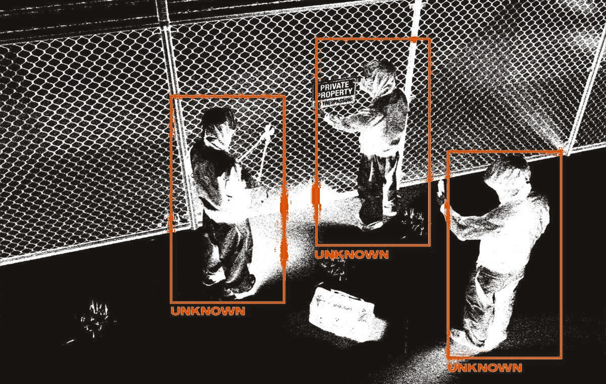

01/07

IA + bancos · Oct 2026
Los bancos le dijeron no a los agentes de IA.
Schwab y JPMorgan no dejan que agentes externos muevan el dinero de sus clientes.

IA + bancos · Oct 2026
Schwab y JPMorgan no dejan que agentes externos muevan el dinero de sus clientes.

“Nosotros no lo controlamos, el cliente no lo controla, algo puede salir mal, ¿y quién responde?”
Rick Wurster, CEO de Schwab, en Bloomberg TV, 16 de octubre de 2026. Traducción libre del inglés.Fuente: The Next Web, 16 oct 2026.
Sí permiten ver saldos e investigar, por enlaces seguros (MCP) que el banco controla. Mover dinero, no.
Fuente: The Next Web, 16 oct 2026.
No es un interruptor. Es una escalera.
Si un agente puede mandar un correo, cambiar un precio o pagar una factura, alguien tiene que responder antes de dárselo.
Puede leer pedidos desde el día uno. Los reembolsos, solo con tu aprobación.